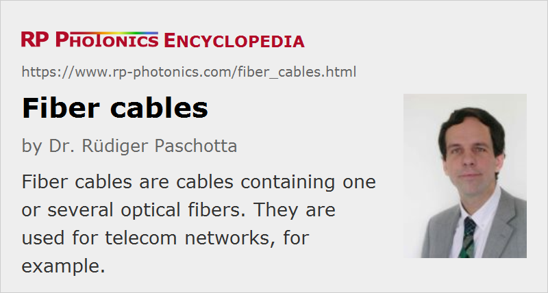

Fiber Cables
Definition: cables containing one or several optical fibers
More specific term: fiber patch cables
German: Faserkabel
Category: fiber optics and waveguides
How to cite the article; suggest additional literature
Author: Dr. Rüdiger Paschotta
An optical fiber cable (or fiber-optic cable) is a more or less flexible cable which contains one or several (sometimes even many hundreds of) optical fibers. Due to protective layers (made of polymers and sometimes also metals) which prevent excessive bending as well as damage due to externally applied stress, fiber cables can be much more robust than bare fibers. Also, fiber cables protect glass fibers against moisture.
A variety of constructions are used for fiber cables:
- There are simple coated fibers (called bare fibers despite the coating), where a single glass fiber is surrounded with a polymer coating with a diameter which is often 250 μm, i.e., twice the fiber diameter. This low level of protection is often sufficient for cables within some optical setup.
- Alternatively, one may use tight buffered cables, where a thicker polymer buffer (often with an outer diameter of 900 μm) protects the fiber. The buffer can protect the fiber against excessive bending, but not much against stretching.
- One may package one or several tight buffered cables, for example, into a larger cable structure providing additional protection, e.g. with an aramid yarn, a ripcord and an outer jacket (sheath, often made of PVC). There may be a central strength member around which the fibers are placed. (When pulling such a fiber, one should pull it on the strength member, not at the jacket.) Some fibers of this type are used as distribution cables within buildings. Others, called breakout cables or fanout cables, contain multiple smaller cables which are stronger than the single fibers in distribution cables; they are usually larger and more expensive than distribution cables. Some fiber cables even contain hundreds of glass fibers.
- Two simplex fiber cables can be combined to obtain a duplex cable – for example, for transmitting data signals in two directions through separate fibers.
- Ribbon cables contain multiple fibers (typically 12) which are arranged side by side, resulting in a flat ribbon. Multiple ribbons can be placed on top of teach other. That geometry allows for a high packing density.
- Fiber bundle cables can contain a large number of relatively small fibers, for example for illumination or imaging applications. Such bundles may be ordered (“coherent”) or unordered.
- There are also fiber cables of the loose-tube type, where one or more coated fibers are loosely lying in a semi-rigid plastic tube (in air or in a moisture-blocking gel). There can be additional layers around the loose tube (or several loose tubes), such as a water blocking wrap and an outer jacket (e.g. made of polyethylene). The construction may also contain a metal jacket for increased mechanical strength. Loose-tube cables can tolerate some amount of stretching, which would usually break glass fibers, because the loose tubes can contain some excess length of fiber. Their protection is often sufficient for outdoor use.
- Armored fiber-optic cables have an additional outer armor layer for further increased protection. They are suitable for being directly buried in the ground, or laid out aerially, or in outdoor ducts.
- Submarine cables are equipped for use in fresh water or salt water. They must be protected against severe mechanical stress e.g. from boat anchors or fishing equipment.

For indoor cables, fire safety is an important aspect, whereas for outdoor cables, moisture resistance and temperature tolerance are factors of high interest. Special aerial/self-supporting cables, which can be exposed to wind and sunlight in free air (hanging on poles), must have a particularly high pulling strength and overall robustness, using some steel or aramid yarn. Outdoor cables could easily tolerate indoor conditions, but are often not allowed for indoor use (or only with certain restrictions) due to issues with fire protection.
The detailed construction for a fiber cable can be relatively sophisticated, optimized for an appropriate trade-off between strength, diameter, weight, fire resistance, cost and other possibly relevant properties. For example, the mechanical details can have an influence on polarization mode dispersion.
The terminations (ends) of fiber cables are often equipped with fiber-optic connectors, which allow relatively simple plugging, as is possible with electrical cables. However, fiber-optic connections are usually more sensitive than electrical connections, and more sophisticated procedures and equipment are needed to prepare or clean them.
Various types of fiber-optic patch cables (patch cords) are available, which are terminated with standardized fiber connectors.
Long-distance cables are made by connecting multiple cables, each one being a few kilometers long. Stable connections can be made with splicing, in particular with fusion splicing.
NEC Classification of Optical Fiber Cables
There exist many variations of fiber cables, to which some classifications are applied. A common classification according to the National Electrical Code (NEC) in the United States is as follows:
- OFC cables are conductive (C) fiber cables, i.e., cables containing metals in strengthening structures (which are not used for electrical connections). In contrast, OFN cables are non-conductive and therefore fully insulating.
- Riser cables, marked with an additional “R” (e.g., OFCR or OFNR), are used for connections between different levels of a building (vertical shafts). They are optimized such that they do not support the spread of fire between different floors.
- Plenum cables, marked with an additional “P” (e.g., OFCP or OFNP), are used in plenum or air-handling spaces – for example, for cables running along ceilings or ventilation ducks. When exposed to fire, they should not produce too much smoke and should be flame-retardant.
- General purpose cables are marked with a “G”, e.g. OFCG or OFNG.
The above mentioned codes do not specify optical properties of the contained fibers; these can be single-mode or multimode fibers, for example, of any type.
Other Elements of Fiber Cable Specifications
Various elements are often encountered n the nomenclature and specifications of fiber cables:
- ITU has developed some standardized fiber characteristics like “G.651.1”; their mentioning implies that such specifications should be fulfilled.
- Fiber Distributed Data Interface (FDDI) is a standard concerning LAN fiber cables, which however with its quite limited transmission speed of 100 Mbit/s has become obsolete due to the improved availability of advanced copper cables.
- There can be additional classifications like OM1, OM2, OM3, OM4 and OM5 for graded-index fibers, which concern the residual level of intermodal dispersion. That limits the transmission bandwidth (or the bandwidth–distance product) of the cable. High performance is achieved e.g. with OM4 50/125-μm laser-optimized fibers, having a very precisely controlled refractive index profile.
- Sometimes, the maximum achievable bandwidth–distance product is specified (in units of MHz·km).
- Specs like “50/125 microns” indicate the core and cladding diameter. Large values of the core diameter – tens of microns – generally indicate multimode fibers.
- The propagation losses are typically specified in units of dB/km (decibels per kilometer). Those apply without significant bending of the cable, so that only some level of microbend losses occurs, apart from absorption and scattering losses.
Applications of Fiber Cables
Optical fiber cables are often used in optical fiber communications. Large and strong cables are used for onshore and submarine data transmission, often bridging distances of thousands of kilometers (using fiber amplifiers). Smaller fiber patch cables can be used e.g. to connect the components of fiber-optic data links within buildings. The key advantages of fiber-optic cables over electrical data cables are the enormous transmission bandwidth and the low losses (particularly in the 1.5-μm wavelength region), but one may also profit from the immunity against electromagnetic interference and from the possibility to have fully insulating cables.
Nowadays, many fiber cables for data transmission have been laid down which are not or not yet used. This is partly because burying a fiber is much cheaper when a channel in the ground is already opened e.g. for laying electrical cables. One may prefer the risk of never used fiber cables over the other risk that additional ground work will be required later on.
There are also many “dark fibers” within fiber cables, i.e., fibers which are not (yet) used. They may be held in reserve for future use.
In laboratory and industrial setups, fiber cables are often convenient for transporting light from a source to an application – for example, from a high-power fiber laser to a welding robot in a car factory, or from an optical sampling head to a measurement instrument. For short-distance transmission of low optical powers, fiber patch cables are often used.
Suppliers
The RP Photonics Buyer's Guide contains 97 suppliers for fiber cables. Among them:
Questions and Comments from Users
Here you can submit questions and comments. As far as they get accepted by the author, they will appear above this paragraph together with the author’s answer. The author will decide on acceptance based on certain criteria. Essentially, the issue must be of sufficiently broad interest.
Please do not enter personal data here; we would otherwise delete it soon. (See also our privacy declaration.) If you wish to receive personal feedback or consultancy from the author, please contact him e.g. via e-mail.
By submitting the information, you give your consent to the potential publication of your inputs on our website according to our rules. (If you later retract your consent, we will delete those inputs.) As your inputs are first reviewed by the author, they may be published with some delay.
Bibliography
| [1] | R. Paschotta, tutorial on "Passive Fiber Optics" |
See also: fiber patch cables, fibers, fiber bundles, fiber optics, fiber connectors, optical fiber communications
and other articles in the category fiber optics and waveguides
|  |
If you like this page, please share the link with your friends and colleagues, e.g. via social media:
These sharing buttons are implemented in a privacy-friendly way!